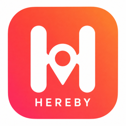
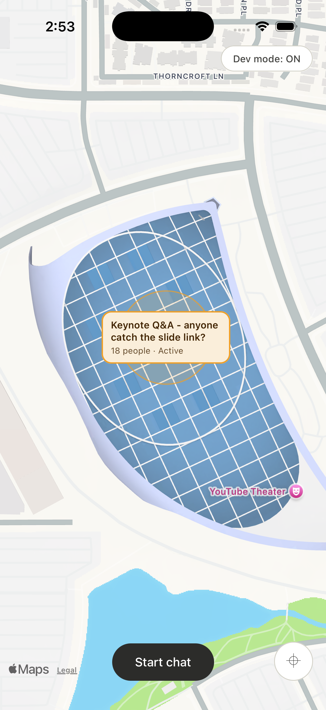
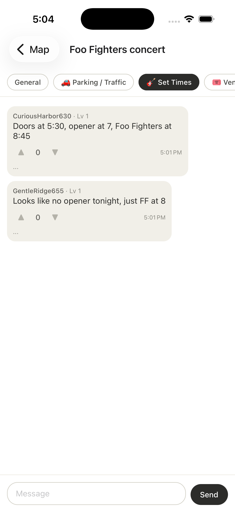
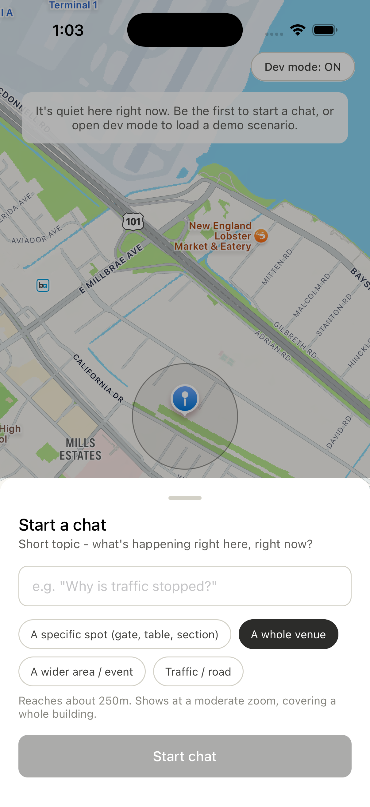

The map is the app. See what people around you are talking about, right now — and join in.
Most chat apps connect you to people you already know. Hereby connects you to whoever's actually near you, right now — for exactly as long as it matters. Once the moment passes, so does the chat; nothing lingers as a group you have to leave later.
The people standing in the same delay, the same traffic, the same crowd usually know what's happening before any app, airline, or venue staff does — because they're living it with you.
Chats are tied to a place and fade on their own once activity dies down. There's nothing to mute, leave, or clean up later.
You show up as a pseudonym and a level, not a name or a face — useful, low-stakes participation without becoming discoverable.
A few examples of exactly when this is useful.
Three lanes just stopped moving and nobody knows why. Check the corridor chat instead of guessing — someone a quarter mile ahead already posted what's going on, and whether a detour's worth it.
The board just says "Delayed," no explanation. The people actually at your gate usually know first — which agent has real answers, who already got rebooked, or if it just became a cancellation. Narrow question? Branch it into its own thread instead of scrolling everyone else's.
Thousands of people, one lost item, no staff in sight. Ask the venue chat where lost and found actually is, or if anyone saw a dropped phone near where you were standing.
Screenshots from the iOS Simulator, running the current build.



From opening the app to posting in a chat.
Sign-up is gated behind a real one-time code sent to your email (Supabase Auth) — no bots spinning up throwaway accounts.
A username is required before you can do anything else, and it's checked against your email and common identifying patterns (no addresses, no phone-number-shaped strings). A safe, anonymous suggestion is generated for you by default.
Only chats your current location is actually inside of are visible — no browsing chats you haven't arrived at yet. Zoom in to reveal more specific ones (a gate, a table) nested inside broader ones (a whole terminal).
Reply to a specific message, upvote or downvote to signal what's helpful, and branch off a focused thread within a chat without starting a whole new conversation.
Voting shapes reputation, not the feed. There's no algorithm ranking messages — an upvote doesn't move anything to the top. What it does do is quietly build the author's level, shown right next to their name on every message they post. A brand-new account and a longtime, consistently helpful one are both readable at a glance, without either sharing a real name.
A few of the design decisions that shape the app.
Raw GPS coordinates are never stored — every chat's location is snapped to a coarse grid before it's saved.
Chats score themselves on participants and recent messages, then move through new → active → cooling down → archived on their own.
Helpfulness is tracked through a level system fed by voting — never through a real name, photo, or contact info.